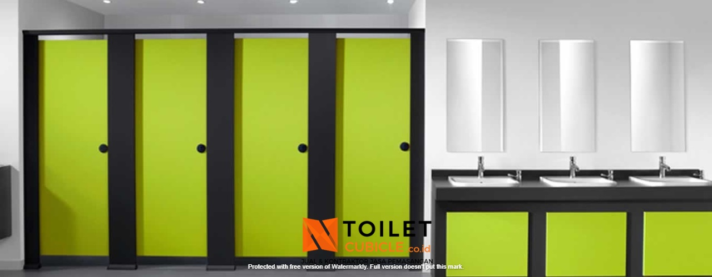
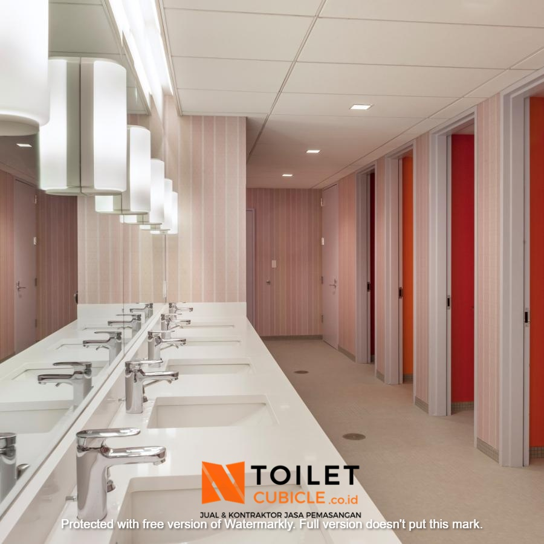
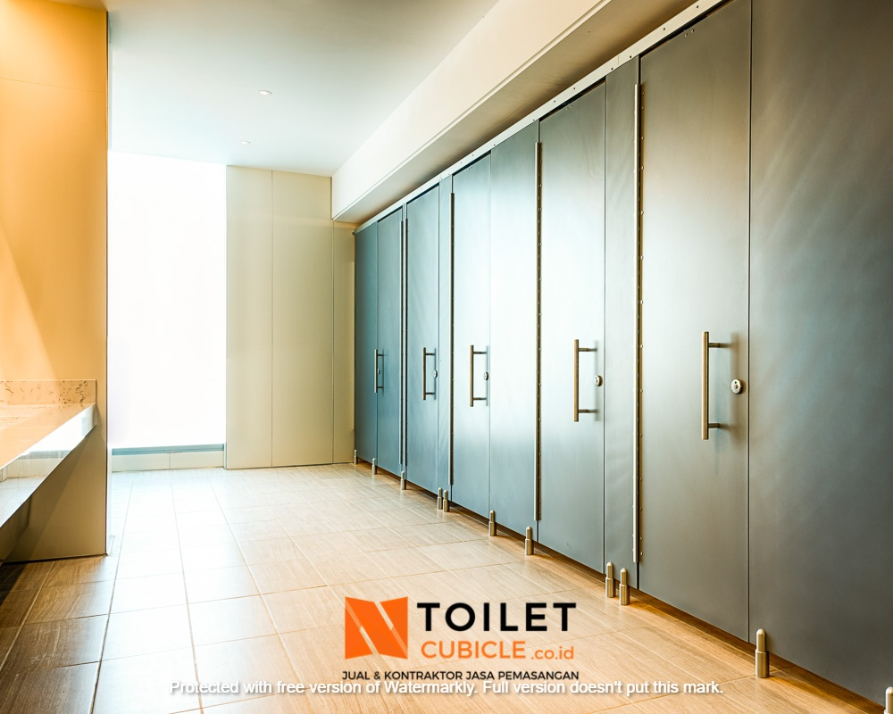
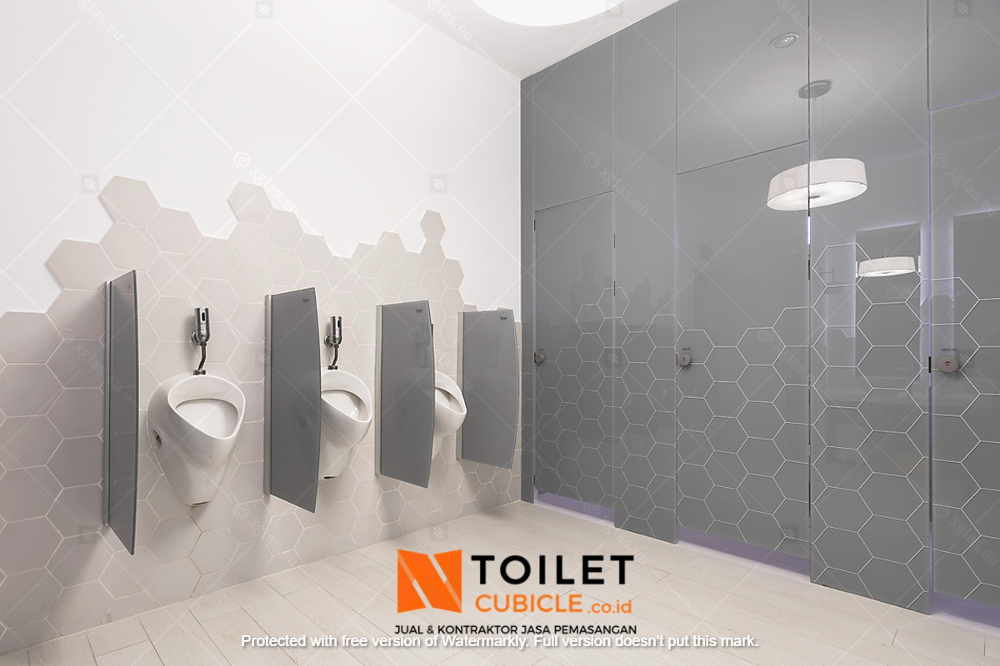
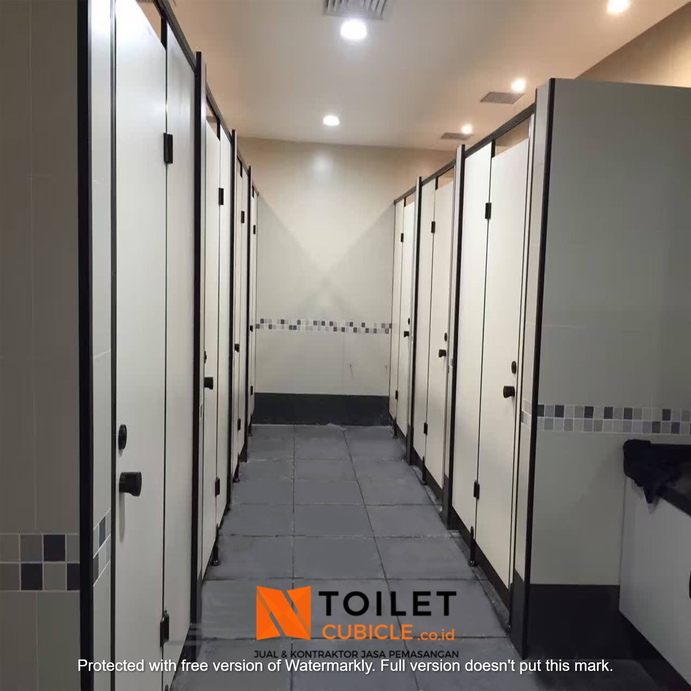

Toilet cubicle memiliki banyak keunggulan dan kualitasnya sangat bagus, itulah sebabnya penerapan toilet cubicle saat ini semakin dinikmati oleh banyak orang. Bangunan – bangunan untuk publik seperti kantor, hotel, gedung pertemuan, mall, bahkan transportasi kapal pun kini juga sudah banyak yang beralih menggunakan toilet cubicle dibandingkan toilet konvensional. Anda sudah berada di tempat yang tepat apabila saat ini anda sedang membutuhkan toilet cubicle, karena kami menyediakan jasa pemasangan toilet cubicle dengan beragam pilihan material yang dapat anda pilih dan sesuaikan dengan interior toilet anda.
Keunggulan Toilet Cubicle


Memiliki bahan dinding yang lebih tipis, ringan, dan tetap kuat, sehingga tidak mudah rusak, lapuk, dan tahan dalam jangka waktu yang lama.
Partisi toilet dipasang secara berderet dan bahan tipis yang digunakan menjadikannya lebih hemat ruanngan dan secara keseluruhan ruangan toilet terlihat lebih luas, meskipun demikian dalam satu ruangan bisa dibuat beberapa toilet yang lebih banyak.
Pada umumnya, partisti toilet kubikel ini lebih mudah dan cepat untuk dipasang sehingga lebih efektif dan efisien dibandingkan dengan toilet konvensional.
Dengan menggunakan partisi untuk toilet kubikel akan memberikan kesan yang lebih elegan dan mewah serta tampilannya menjadi lebih rapi dan bersih, sehingga akan memberikan kenyamanan bagi penggunanya.
Toilet cubicle memiliki banyak pilihan bahan dan juga motif serta warna yang bisa anda pilih sesuai dengan preferensi anda, selain itu juga bisa dijadikan sebagai pelengkap desain interior toilet anda.
Sistem konvensional yang menggunakan pembatas dinding dengan batu bata cenderung memiliki beban struktur bangunan yang lebih berat, sementara partisi memiliki bahan yang lebih ringan.
Harga Pemasangan Partisi Toilet di Medan
Kami merupakan perusahaan yang menyediakan jasa pemasangan toilet cubicle untuk bangunan – bangunan dan harga yang kami tawarkan sangat terjangkau, tergantung dari jenis material & ukuran toilet cubicle yang akan dibuat. Perusahaan kami selalu berupaya untuk meningkatkan kualitas pelayanan dengan selalu menggunakan tenaga professional yang sudah berpengalaman dalam pemasangan toilet cubicle, sehingga toilet cubicle yang dihasilkan dapat memenuhi standart dan kebutuhan anda. Untuk informasi lebih lengkap mengenai jasa pemasangan toilet cubicle, anda dapat langsung menghubungi kami melalui kontak yang tertera sekarang juga.
Terdapat berbagai macam pilihan material untuk toilet cubicle yang kami sediakan dan dapat anda pilih sesuai dengan interior kantor anda, diantaranya yaitu:
Toilet Cubicle Phenolic Stasiun

Lapisan kraft paper dan resin yang dilaminasi menggunakan decorative paper pada kedua sisinya adalah bahan dasar dari panel phenolic ini.
Toilet Cubicle Glass Stasiun

Seperti namanya, toilet cubicle ini menggunakan partisi berbahan dasar kaca, sehingga toilet anda nantinya akan terkesan lebih mewah dan eksklusif.
Toilet Cubicle WPC Stasiun
Material dari toilet ini adalah WPC atau Wood Poliemer Composite yang merupakan olahan dari elemen kayu dan plastik yang dilebur menajdi satu, komposisinya yaitu 60% serbuk kayu, 30% plastik, dan 10% bahan kimia yang ramah lingkungan.
Toilet Cubicle PVC Stasiun

Toilet cubicle yang satu ini dibuat dengan material Polyvinvyl Chloride atau bisa disingkat menjadi PVC yang mempunyai kemampuan tahan terhadap cuaca apapun dan anti terhadap rayap, sehingga dapat diaplikasikan pada toilet dengan tipe kering maupun basah.
Toilet Cubicle GRC Stasiun
Toilet cubicle ini terbuat dari material GRC atau Glass Reinforced Concrete, desainnya hampir sama seperti beton, namun panel GRC memiliki beban yang lebih ringan dari produk panel beton lainnya, selain itu ukurannya juga tipis sehingga bisa dimanfaatkan sebagai material untuk toilet cubicle.